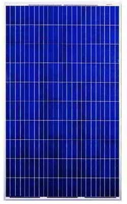
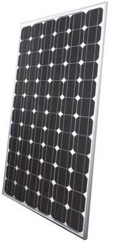
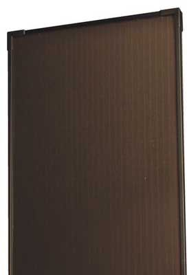
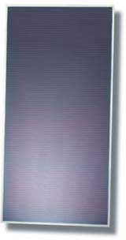
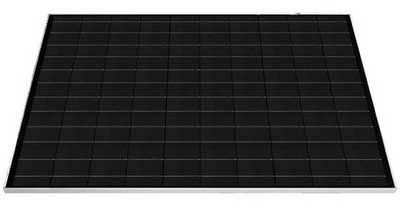

Виды и особенности солнечных батарей

{kind=link}
Использование энергии солнца позволяет экономить дорогую электроэнергию, поставляемую в дома энергетическими компаниями, и даже зарабатывать на поставках энергии в электрическую сеть, если таковое предусмотрено местным законодательством.
Главная составляющая домашней солнечной электростанции – солнечные батареи, или фотоэлектрические панели, как их еще называют. Их назначение – прямое преобразование солнечной энергии в электрическую.
Солнечная батарея состоит из отдельных фотоэлектрических элементов, которые соединяясь вместе, обеспечивают необходимую мощность батареи. В настоящее время на рынке можно встретить пять типов солнечных батарей, различающихся материалами, из которых изготовлены их элементы.
Солнечные панели из поликристаллических фотоэлектрических элементов наиболее распространены ввиду оптимального соотношения цены и КПД среди всех разновидностей панелей. Их КПД составляет 12-14%. У элементов, образующих панель, характерный синий цвет и кристаллическая структура.
{kind=link}

Поликристаллическая солнечная панель
Солнечные панели из монокристаллических фотоэлектрических элементов более эффективны, но и более дороги в пересчете на ватт мощности. Их КПД, как правило, в диапазоне 14-16%.
{kind=link}

Монокристаллическая солнечная панель
Обычно монокристаллические элементы имеют форму многоугольников, которыми трудно заполнить всю площадь панели без остатка. В результате удельная мощность солнечной батареи несколько ниже, чем удельная мощность отдельного ее элемента.
Солнечные батареи из аморфного кремния обладают одним из самых низки КПД. Обычно его значения в пределах 6-8%. Однако среди всех кремниевых технологий фотоэлектрических преобразователей они вырабатывают самую дешевую электроэнергию.
{kind=link}

Солнечная панель на основе аморфного кремния
Солнечные панели из теллурида кадмия (CdTe) создаются на основе пленочной технологии. Полупроводниковый слой наносят тонким слоем в несколько сотен микрометров. Эффективность элементов из теллурида кадмия невелика, КПД около 11%. Однако, в сравнении с кремниевыми панелями, ватт мощности этих батарей обходится на несколько десятков процентов дешевле.
{kind=link}

Солнечная панель на основе теллурида кадмия
Солнечные панели на основе CIGS. CIGS – это полупроводник, состоящий из меди, индия, галлия и селена. Этот тип солнечных батарей тоже выполнен по пленочной технологии, но в сравнении с панелями из теллурида кадмия обладает более высокой эффективностью, его КПД доходит до 15%.
{kind=link}

Солнечная панель на основе CIGS
Потенциальные покупатели солнечных батарей часто задают себе вопрос, сможет ли тот или иной тип фотоэлектрических преобразователей обеспечить необходимую мощность всей системы. Здесь надо понимать, что эффективность солнечных батарей напрямую не влияет на количество вырабатываемой установкой энергии.
Одинаковую мощность всей установки можно получить при помощи любых типов солнечных батарей, однако более эффективные фотоэлектрические преобразователи займут меньше места, для их размещения понадобится меньшая площадь. Например, если для получения одного киловатта электроэнергии потребуется около 8 кв.м. поверхности солнечной батареи на основе монокристаллического кремния, то панели из аморфного кремния займут уже около 20 кв.м.
Приведенный пример, конечно же, не является абсолютным. На выработку электроэнергии фотоэлектрическими преобразователями влияет не только общая площадь солнечных панелей. Электрические параметры любой солнечной батареи определяются в так называемых стандартных условиях тестирования, а именно при интенсивности солнечного излучения 1000 Вт/кв.м. и рабочей температуре панели 25° C.
В странах Центральной и Восточной Европы интенсивности солнечного излучения редко достигает номинального значения, поэтому даже в солнечные дни фотоэлектрические панели работают с недогрузкой. Может показаться, что и температура 25° C тоже встречается не так уж и часто. Однако речь о температуре солнечной панели, а не о температуре воздуха.
В рамках общей тенденции снижения отдаваемой мощности с ростом рабочей температуры, каждый тип солнечных батарей ведет себя по-разному. Так у кремниевых элементов номинальная мощность падает с каждым градусом превышения номинальной температуры на 0,43-0,47%. В то же время элементы из теллурида кадмия теряют всего 0,25%.